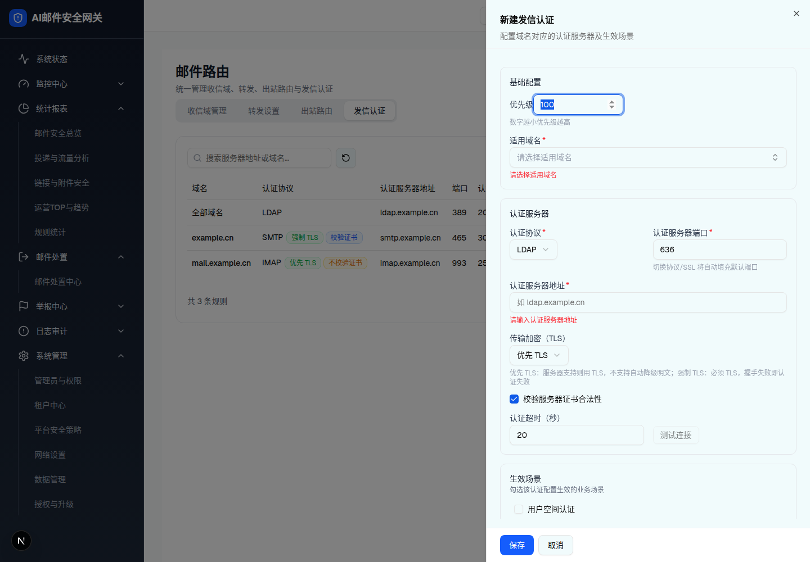
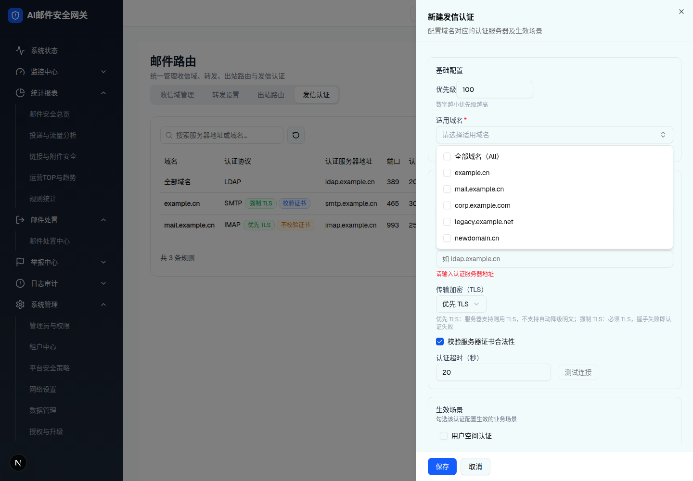
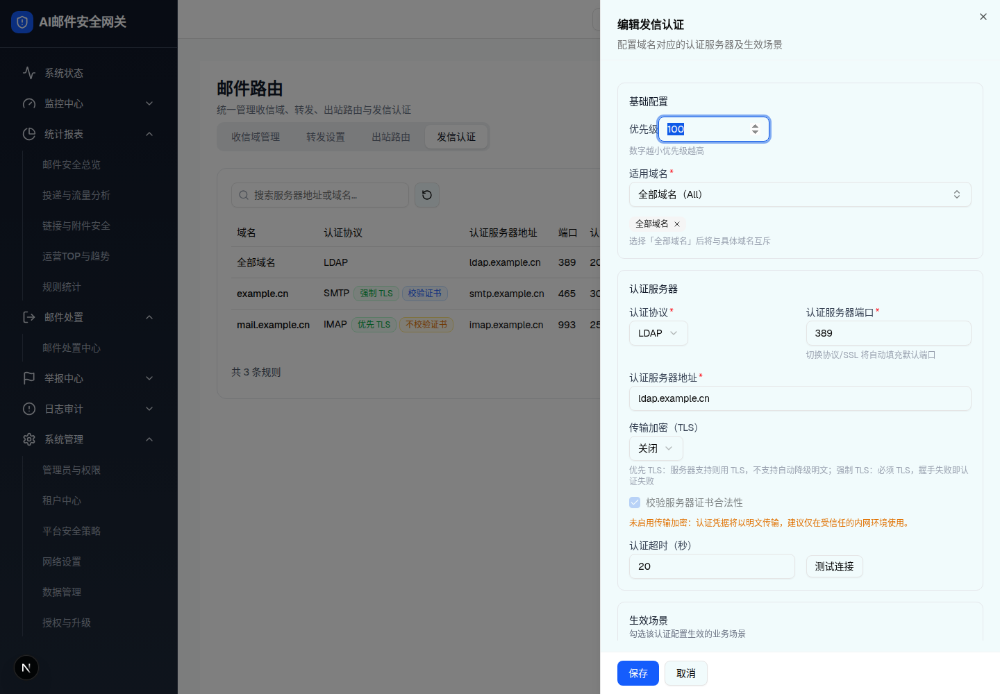
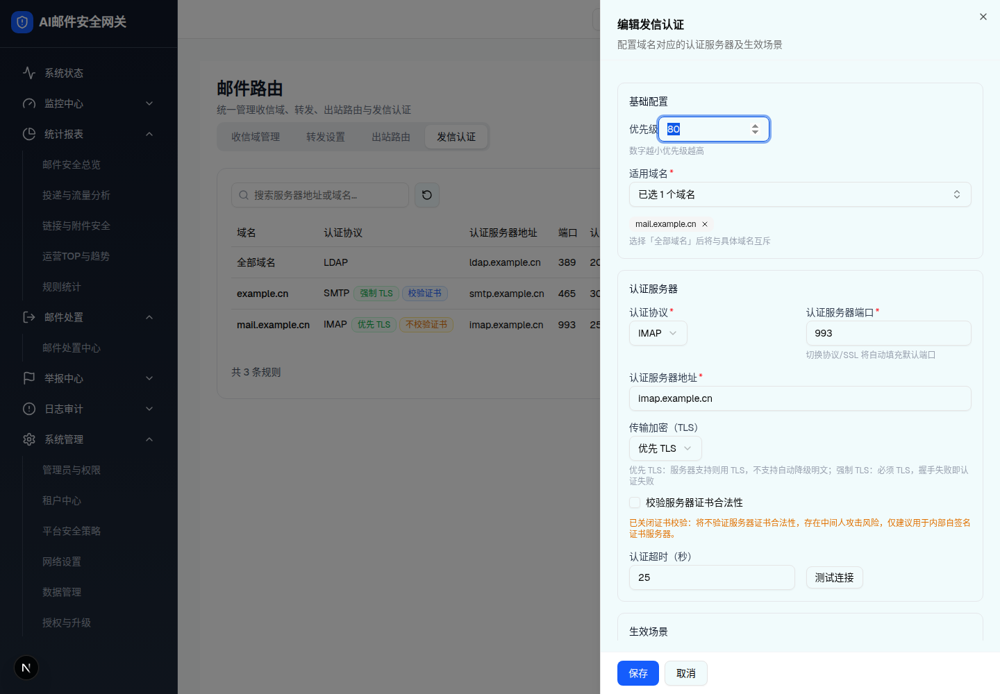
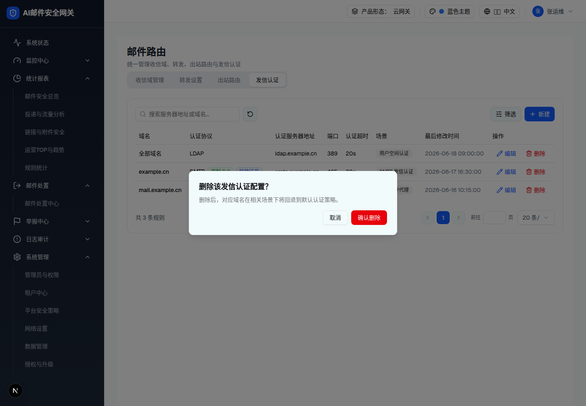

| 所属组件 | 2.6 发信认证 Tab |
| 触发路径 | 「新建」/ 行内「编辑」→ Sheet 抽屉；抽屉内「适用域名」→ Popover 多选弹层（#picker）；行内「删除」→ #delete |
| 抽屉标题 | 「新建发信认证」/「编辑发信认证」+ 副标题「配置域名对应的认证服务器及生效场景」 |
预览可操作：认证协议切换自动填充端口（TLS 关闭→标准端口 SMTP 25/LDAP 389/POP3 110/IMAP 143；优先/强制 TLS→加密端口 465/636/995/993）；传输加密（TLS）三档切换联动：切「关闭」→ 端口回标准值 + 证书校验强制取消并置灰 + 橙字明文警告；优先/强制且取消证书校验 → 中间人风险橙字；生效场景至少选一；同域名+同场景冲突红字（对 mock 3 条配置实时判定，试试勾选「全部域名」+「用户空间认证」）；「测试连接」需服务器地址非空。

| 字段 | 规格（浏览器实测） |
|---|---|
| 优先级 | Input number w-40，默认 100，hint「数字越小优先级越高」；列表无此列（§9-D2） |
| 适用域名 * | combobox 触发按钮（空→灰字「请选择适用域名」；All→「全部域名（All）」；否则「已选 N 个域名」）+ 下方已选徽章组（× 可移除）；hint「选择「全部域名」后将与具体域名互斥」；错误「请选择适用域名」 |
| 认证协议 * / 端口 * | Select：SMTP/LDAP/POP3/IMAP；端口 hint「切换协议/SSL 将自动填充默认端口」，自动填充后仍可手改；1-65535 |
| 认证服务器地址 * | 占位「如 ldap.example.cn」；「请输入认证服务器地址」 |
| 传输加密（TLS） | Select 三档：关闭 / 优先 TLS（默认）/ 强制 TLS；hint「优先 TLS：服务器支持则用 TLS，不支持自动降级明文；强制 TLS：必须 TLS，握手失败即认证失败」；切换联动端口与证书校验 |
| 校验服务器证书合法性 | Checkbox，默认勾选；tlsMode=off 时禁用+置灰（编辑既有 off 配置时保留原值但禁用）；非 off 且取消 → 橙字「已关闭证书校验：将不验证服务器证书合法性，存在中间人攻击风险，仅建议用于内部自签名证书服务器。」；off → 橙字「未启用传输加密：认证凭据将以明文传输，建议仅在受信任的内网环境使用。」（网关 authd fail-closed 冲突 §10-Q5） |
| 认证超时（秒） | 默认 20；「超时范围 1-300 秒」 |
| 测试连接 | 禁用条件：服务器地址空或测试中；三态 TestResultTag（0.9s mock） |
| 生效场景 * | Checkbox 组：用户空间认证 / SMTP 发信认证 / 邮件同步代理；「请至少选择一个生效场景」；唯一性冲突红字「与已有配置（协议）在相同域名+场景下冲突，同一场景仅允许一条生效配置。」（含 All 交叠判定，阻断保存） |
| 底部操作 | 「保存」/「取消」；成功 Toast「认证配置已添加/已更新」 |
| 比对项 | demo 实际 DOM | 嵌入的 HTML | 是否一致 |
|---|---|---|---|
| SectionCard 数 | 3（基础配置 / 认证服务器 / 生效场景） | 3 | 一致 |
| 初始错误红字数 | 3（适用域名 / 服务器地址 / 生效场景） | 同 | 一致 |
| 端口默认值 | 636（LDAP × prefer → ssl 端口） | 同 | 一致 |
| 节点数 | 80 | 80 | 一致 |
预览可操作：点击触发按钮开合弹层；勾选「全部域名（All）」→ 清空并锁定具体域名（disabled）；再点 All 取消；勾选具体域名更新触发文案「已选 N 个域名」与徽章组。

| 比对项 | demo 实际 DOM | 嵌入的 HTML | 是否一致 |
|---|---|---|---|
| 根节点 | [data-radix-popper-content-wrapper] > [role=dialog] p-1.5 | 同（中和定位） | 一致 |
| 选项数 | 6（All + 5 收信域） | 6 | 一致 |
| All 互斥 | All 未选时具体域名可勾（无 disabled） | 同 | 一致 |
| 节点数 | 15 | 15 | 一致 |


| 比对项 | demo 实际 DOM | 嵌入的 HTML | 是否一致 |
|---|---|---|---|
| 域名徽章 | 1 枚「全部域名」（All 显示名转换） | 同 | 一致 |
| 证书校验 Checkbox | data-state=checked + disabled（label 类 cursor-not-allowed opacity-50） | 同 | 一致 |
| 明文警告 | 橙字条件渲染（tlsMode=off 分支） | 同 | 一致 |
| 场景勾选 | 用户空间认证 checked，其余 2 项未选 | 同 | 一致 |
| 节点数 | 88（nocert 样本 85，见截图） | 88 | 一致 |
预览可操作：「取消」/「确认删除」→ Toast「认证配置已删除」。
删除后，对应域名在相关场景下将回退到默认认证策略。

| 比对项 | demo 实际 DOM | 嵌入的 HTML | 是否一致 |
|---|---|---|---|
| 标题 | 「删除该发信认证配置？」（静态文案） | 同 | 一致 |
| 节点数 | 7 | 7 | 一致 |